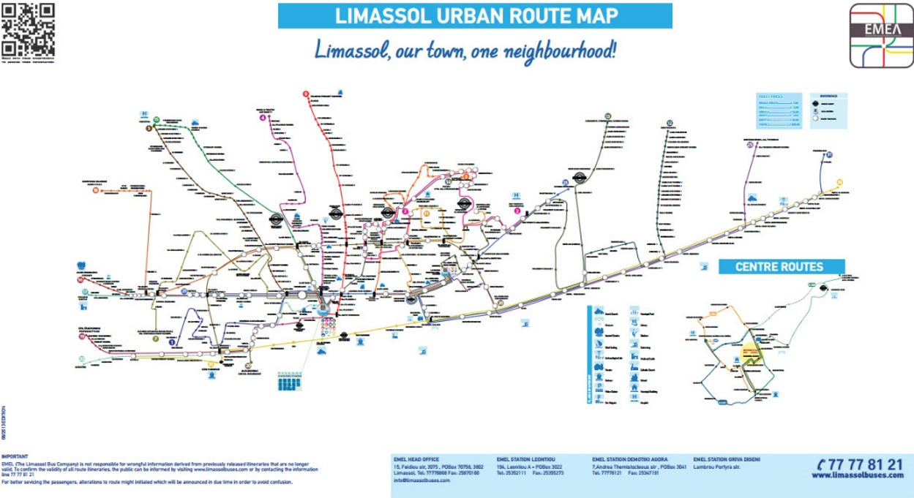

Conference General Information |
Registration and Information Desk Operating Hours | ||||||||
|
The Registration and Information Desk will be located at the mezzanine floor of the Amathus Beach Hotel. Please collect your Conference pack and name badge on arrival. The name badge stands for a pass in all conference sessions, coffee breaks, lunch breaks and the welcome cocktail reception. | ||||||||
| ||||||||
Wireless Internet Connection | ||||||||
|
Free WiFi will be available for all delegates. Access codes will be available in the pocket of your name badge. | ||||||||
Dress Code | ||||||||
|
| ||||||||
|
| ||||||||
Lunch and Coffee Breaks | ||||||||
|
All coffee breaks will take place at the ‘Atheneaum’ and ‘Zeus’ Terraces. Lunch breaks will take place at the ‘Atheneaum’ and ‘Zeus’ Terraces at the mezzanine floor as well as the ‘Blue Breeze’ Terrance on the ground floor. Make sure to have your name badge during all breaks. If you haven’t informed the organizers of any dietary requirements or allergies during registration, please make sure to do so on-site at the Registration Desk. Banquet voucher/s are available in your name badge pocket. You will be requested to hand in your vouchers prior to entering the bus for your transportation to the banquet venue. | ||||||||
Website and Conference Mobile App | ||||||||
|
Conference website: www.ecc18.eu Conference mobile app: The Conference4me smartphone app provides you with the most comfortable tool for planning your participation in ECC 2018. Browse the complete program directly from your phone or tablet and create your very own agenda on the fly. The app is available for Android, iOS and Windows Phone devices. To download the mobile app, please visit http://conference4me.eu/download or type 'conference4me' in Google Play, iTunes App Store or Windows Phone Store. | ||||||||
Local Public Transportation | ||||||||
Getting to the City Center | ||||||||
|
Commuting to and from the City centre from the Hotel is easy, by using the public bus transportation. The one way ticket costs €1,50, the daily ticket costs €5,00 and the weekly ticket costs €20,00. For further information on the public bus routes please visit their official site | ||||||||
Getting to the Conference Venue - Amathus Beach Hotel | ||||||||
|
By using the following public bus routes, it is very easy to commute to and from the Conference Venue Hotel - Amathus Beach Hotel: Full size map is provided in your ECC2018 conference bag. | ||||||||
|
 | ||||||||
Getting Around the Island | ||||||||
|
Getting around the island by car is easy and quick, with good roads and motorways linking all major towns with English signposts along the way. While renting a car is always an efficient and enjoyable way to get around, the island now boasts a highly upgraded streamlined bus service making it easy to travel on public transport both within the towns, as well as to and from the airport and your hotel. Interurban buses: Various bus companies link all major towns and airports with routes at specified intervals. | ||||||||
Intercity Buses | ||||||||
|
Tel: 80007789 (local)/ +35724 643493 (from abroad) www.intercity-buses.com | ||||||||
Kapnos | ||||||||
|
Tel: 77771477 (local)/ + 35724 008718 (from abroad) www.kapnosairportshuttle.com | ||||||||
Limassol Airport Express | ||||||||
|
Tel: 77777075 (local)/ +35797 779090 (from abroad) www.airportshuttlebus.eu | ||||||||
Taxi Facilities | ||||||||
| ||||||||
Other Useful Information | ||||||||
|
Time Zone, Country Code and Phones | ||||||||
|
Cyprus is two hours ahead of GMT. The international dialing code for Cyprus is +357. While public pay phones can be found around the island taking pre-paid phone cards you can also purchase a local SIM card for your mobile phone if planning to make many calls or stay on for a longer duration. | ||||||||
Money and Exchange | ||||||||
|
Cyprus uses the euro currency. While banks exchange all major currencies. Countless ATMs in all towns and tourist resorts mean you won’t have to go far before coming into contact with a cash point. Most shops, restaurants and hotels accept all major credit cards. Bank Opening Hours: Mon to Fri morning 8.15am - 1.30pm. Banks at Larnaka and Pafos International Airport provide exchange bureau services on a 24-hour service. Exchange facilities are also available at the Limassol Harbour. | ||||||||
Useful Phone Numbers | ||||||||
|
Police and all Emergencies: 112, 199 | ||||||||
Electric Current – Voltage | ||||||||
|
Power supply in Cyprus is 240 volts AC, 50Hz. Sockets are usually 13 amp, square pin in most buildings. Many hotels provide adaptors upon request from the reception. | ||||||||
General Shopping Hours | ||||||||
|
Shop opening times vary depending on their type and location, though shops normally open between 07:00 and 09:00. | ||||||||
Insurance | ||||||||
|
It is recommended that participants arrange insurance for medical expenses, loss and accidents occurring during the conference. The organizers cannot be held responsible for any losses, damages or injuries. | ||||||||
Smoking | ||||||||
|
Smoking is banned in all enclosed public spaces throughout Cyprus, including conference venues, shops, restaurants, pubs and hotel bedrooms. |